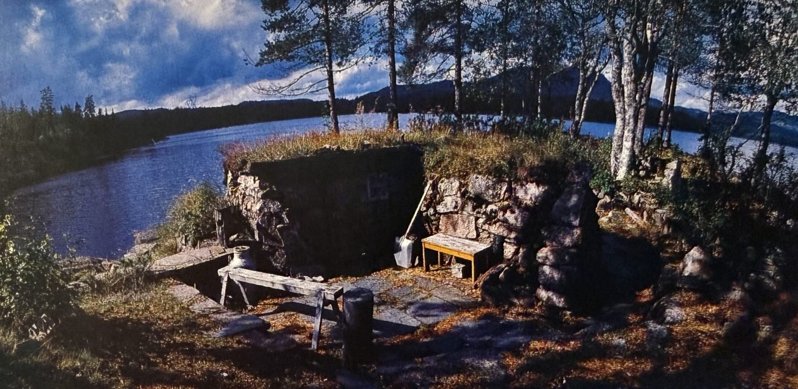
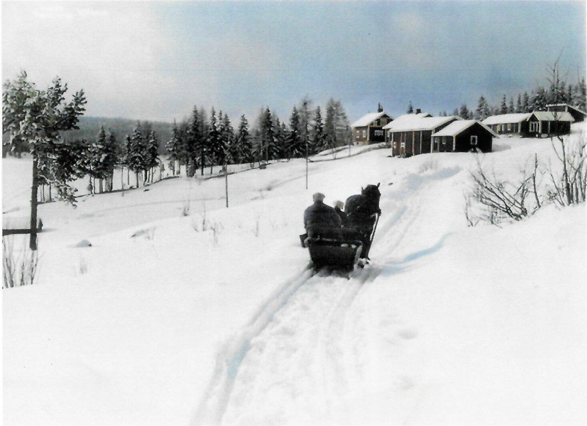
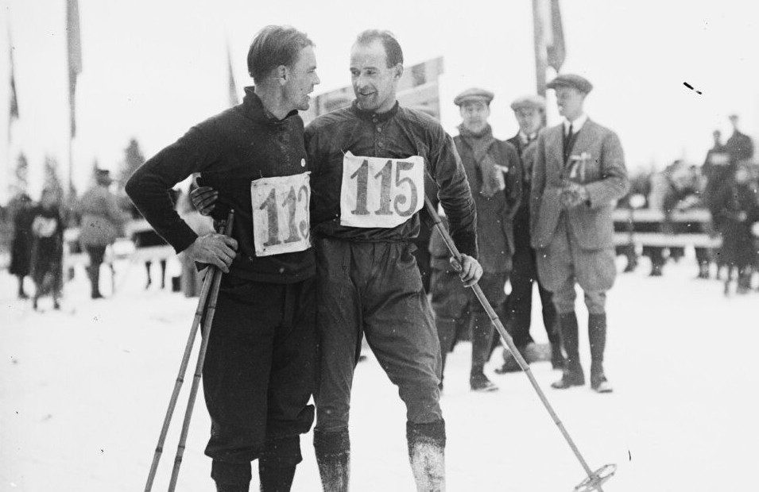
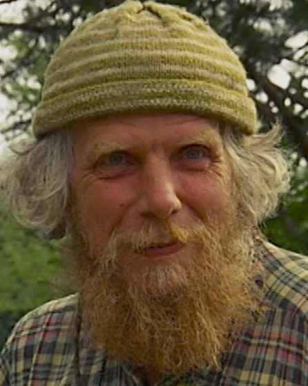
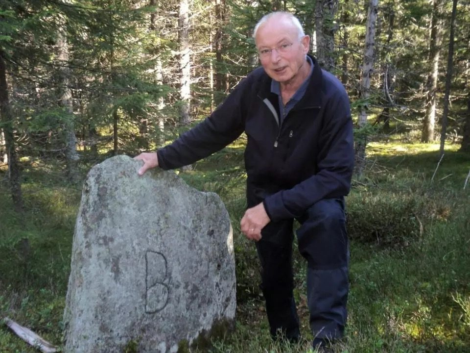
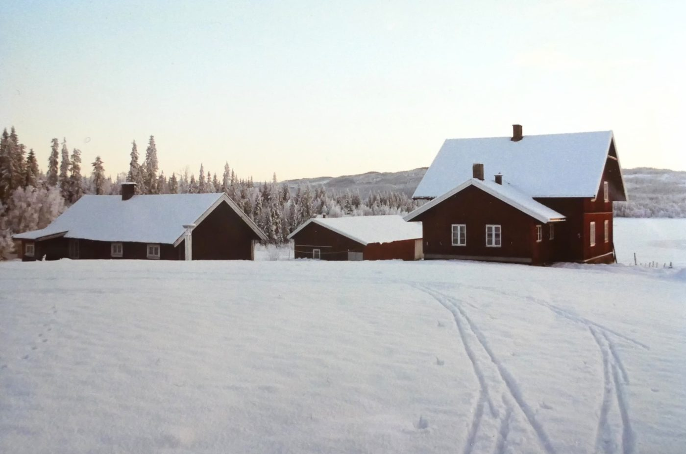

Artikler
Historisk arkiv med tidligere publiserte artikler: portretter, intervjuer, turskildringer og minneord fra Oslomarka.
Ingen artikler i denne kategorien ennå.

Ernst Bjerknes – ingeniøren som tegnet verdens første skikart
Ernst Bjerknes var en allsidig og viljesterk mann som satte spor etter seg på mange områder. Gjennom et langt liv satte han spor i Nordmarka, Kristiania og en rekke andre steder i Norge.
2026
12 artiklerPå vandring i Oslomarka i 1951
Tenk å kunne reise tilbake i tid – til Oslomarka for omtrent 75 år siden. Oppleve våren, høre fuglesangen, lytte til fisken som vaker – og ikke minst møte menneskene som levde og arbeidet i marka.

Nils Houge – Markagrensens arkitekt og adjutant
Det er 33 år siden Nils Houge gikk bort. Houge var en visjonær naturverner, en mann med et strategisk og langsiktig perspektiv. Han skrev og publiserte «Oslomarka som naturpark» i 1941.

Nordmarkas eneste klosterhage
Allemannsretten er mer enn felleseie. Ofte er den et ensomt forhold mellom enkeltmennesker og små naturperler. Les mer på Heikampen.no

Familien på Katnosa
I boken «Fra Mork i Hakadal og Ask i Gjerdrum til Katnosa» forteller Bjørn Katnosa (1947) om familiens historie gjennom generasjoner – en vandring fra bygdene ved Nordmarka...

Solan Gundersen på Rustadsaga
Aukust-figuren Solan Gundersen hadde tittelen sagbruksarbeider. Arbeidsplassen var Rustadsaga. Les historien bak hos Heikampen.no

Korpås-Olsen: Eneboer og preparant i Østmarka
Olaf Olsen (1874-1952) gikk under navnet Korpås-Olsen og hadde sin anonyme tilværelse ikke mange hundre meter fra der mengder av hovedstadens turfolk nå legger sin søndags-tur. Les hans historie på Heikampen.no

Mix-klubben
For hundre år siden ble det sagt at det var lettere å vinne OL-gull på ski, enn å vinne klubbmesterskapet i Mix-klubben. Her kan du lese om Mix og alle de meriterte medlemmene, som hadde sin hoppbakke, løype og klubbhus på Kampen i Lommedalen i herlige Bærumsmarka.

De små Østmarkbøkene
I første halvdel av 1900-tallet kom det ut en rekke bøker med stoff hentet fra friluftsliv, jakt og fiske. Mange av forfatterne hadde Østmarka som turarena, og bøkene var gjerne bygd opp med forholdsvis korte, selvopplevde historier.

Sju menn på ski frå Skumsjøen til Sognsvann
Jan Erik Vold (1939) er lyriker med et enestående forfatterskap. Trygve Åslund (1952) er tidligere forlagssjef med en sterk publisistisk liste. Begge er sportsnostalgikere og makeløse kulturpersonligheter, som på hver sin måte gjør en sterk positiv forskjell – uansett hvor de befinner seg. Også i skiløypa.

Minneord om Trond Burud
Skogsmannen Trond Burud har gått sin siste tur. Mange kjenner til Tronds to små, men meget innholdsrike, bøker om Rausjø-/Børtervannområdet i Østmarka. «Opplevd og hørt i Rausjø» kom i 1992, «Vandring i Østmarka naturreservat» kom fem år seinere...

Minneord om Sverre Grimstad
Sverre Grimstad (1942 – 2025) må være den mannen som har skrevet flest bøker med tema Nordmarka. Nå har markaentusiasten gått sin siste tur. Sverre døde 29. desember, 83 år gammel. Hele sju store bøker ble forfattet av Sverre Grimstad, i tillegg til en rekke artikler...

Den fine runden
Thor Gotaas (1965) er en energirik nasjonalskatt fra Brumunddal. Han har over 25 deltakelser i Birken, alle med merke og litt bakglatte ski. Artikkelen Den fine runden er fra Nordmarka, og publiseres for første gang her på Heikampen.no.
2025
2 artikler
En juleaften på Krokskogen
Eva Huseby har skrevet en rekke fortellinger og beretninger om livet i Nordmarka. Alle med innsikt, nærhet og varme. En julaften på Krokskogen er en av disse fortellingene, kanskje den aller fineste.

Intervju med Bjørn Smith-Simonsen
Intervju med Bjørn Smith-Simonsen. "Oslomarka på kryss og tvers." Tekst og foto: Eva Huseby. Bjørn Smith-Simonsen (1946) elsker kona Tone, Oslomarka, bøker og kart...